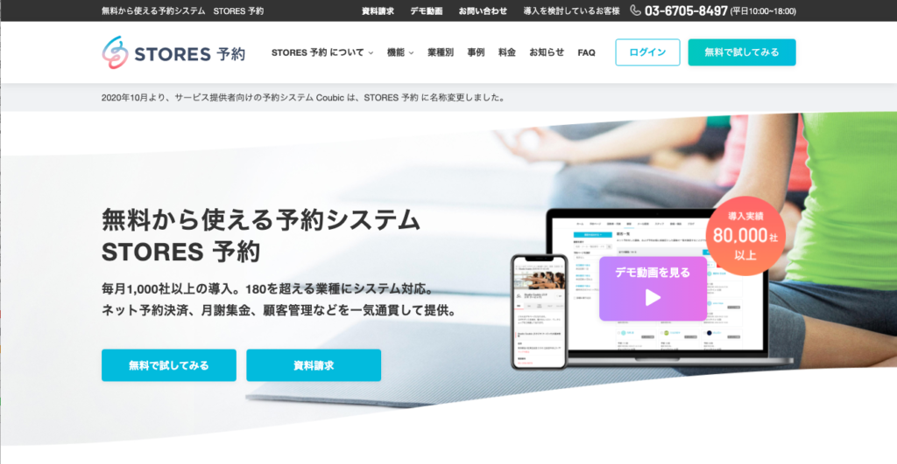
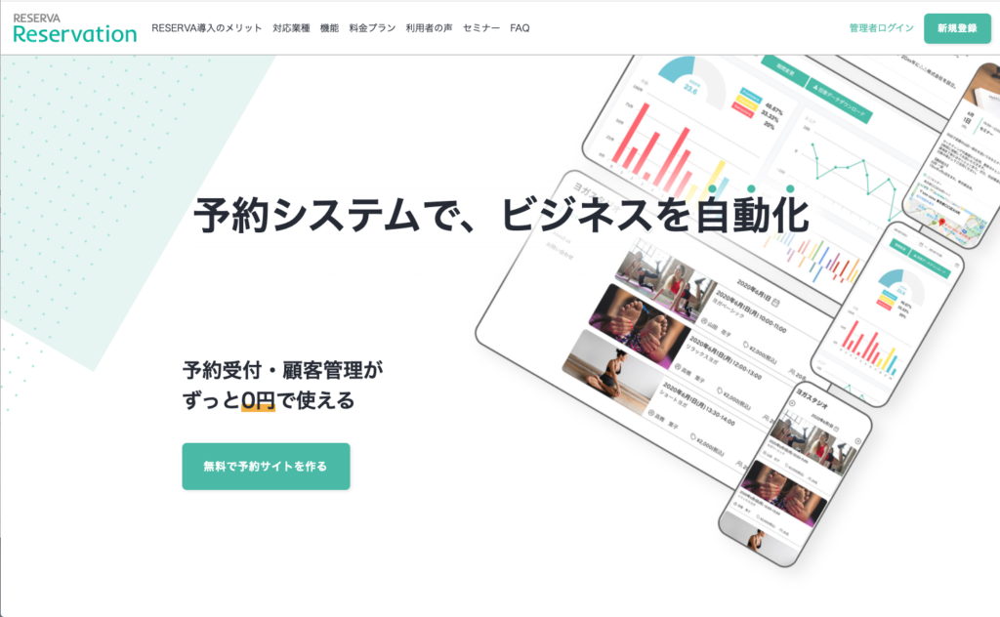

#026 自動予約システム

こんにちは！
今日は、ある鍼灸院の先生からのご相談について、ゆるく語ってみたいと思います。
（１）「コロナでお客さんがへってしまった」
今週、仕事のあとに鍼灸院へ行ってきました。先生とは長い付き合いなので、「最近、どうですか」などといつものように会話していたのですが…。
「実は、コロナでお客さんが減ってしまって」と、先生は渋い顔に。経営が厳しいので、受付や事務を手伝っていた奥さんもパートに出ることになり、現在鍼灸院は先生一人でまわしているそうです。
（２）診療中に電話が・・・
そこへ、突然医院の電話が鳴りました。お客さんからの予約電話です！しかし、先生は診療に集中できず、ちょっと不機嫌な対応。やっぱり、何もかも一人でやるのは大変ですよね。
（３）「自動予約システム」がある！
そういえば、最近LINE公式アカウントのご相談をお受けするときによく「自動予約システム」の話が出るんです。医院やサロンでは、お客様からの予約をスムーズに取ることが必須！最近、このような人手不足の医院やサロン向けに、人気の自動予約システムがあるのをご存知ですか？
（４）大手の自動予約システム『STORES予約』
まずは老舗の旧『Coubic』あらため『STORES予約』。お客さんとの日程調整や空き枠管理など、今まで人手が必要だった予約管理をこれ一本で管理できます！
あらかじめ用意された業種別のテンプレートを選ぶだけで簡単に導入できるので、ベンチャー企業や、個人経営の医院・サロンさんにとってもありがたいシステムですね！

もちろん、パソコンがなくてもスマホやタブレットで操作できます。昨年からのコロナ禍において、あらゆる企業の来店予約や確定申告会場でも活用されているので、信頼度もバツグン！LINE公式アカウントとも連携できます！
まだ予約システムの導入を迷っておられる場合でも、まずは「フリープラン（登録無料）」からお試しできるので、オススメの予約システムです。
（５）『RESERVA』
次に、登録事業者数17万件を誇る大手の『RESERVA』。業種別のシステムテンプレートがなんと300種類以上！用意されているので、こだわり派の人にもオススメです！

予約調整から決済まですべて自動で管理できるだけでなく、すでに利用している各種GoogleツールやZoom、そしてLINE公式アカウントとも連携できるのはお値打ちですね！ その他、外国語対応や大事なキャンセル待ち予約まで出来る上に、費用は０円／月（予約機能のみ）〜と大変リーズナブルです！
（６）LINE公式アカウントとの連携
「予約対応は大事だから、バイトもきちんと教育して…」なんて考えは、もう時代遅れなんですね！どちらも最初は0円スタートで始められるのも安心できます。
ただ、どちらもLINE公式アカウントと連携した場合、リッチメニュー に予約システムのURLを仕込んでおいて、そこから個人情報・メールアドレスを登録してもらって・・・という流れとなり結局はメールで通知が来ることになります。
このあたり、せっかくLINE公式アカウントを使っているに・・・とコンサルタントとしては歯痒さがあります。
他にも魅力的な自動予約システムがたくさんあるので、次回はLINEメッセージ内で予約できるシステムをご紹介していきます！
まずはLINE公式アカウントを開設しましょう！
●LINE公式アカウントの開設方法はこちら
●LINE公式アカウントをオススメする理由はこち
●LINE公式アカウントでできることはこちら
●Lステップでできることはこちら